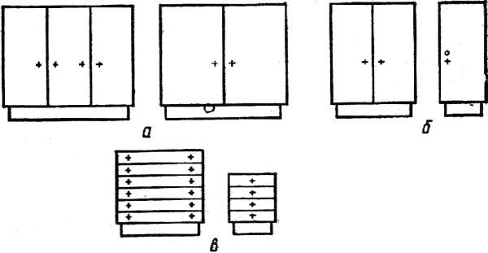
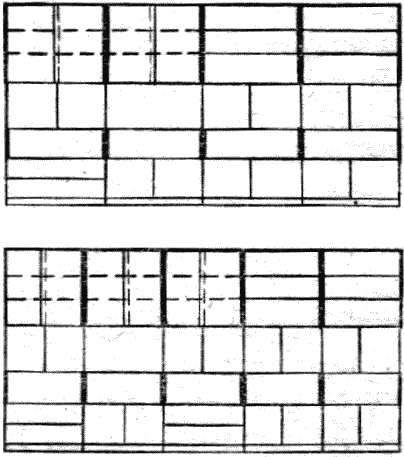
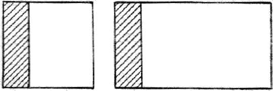

Форма и назначение мебели.

Функциональное назначение, конструкция, материал и технология изготовления изделий мебели являются основными факторами, определяющими форму мебели. Они оказывают непосредственное воздействие на геометрические и физические свойства формы.
В зависимости от соотношения размеров по трем координатам пространства изделия мебели в их геометрическом виде могут иметь линейную, плоскостную или объемную форму. Эмоциональное воздействие формы мебели будет зависеть от вида линий, образующих геометрическую форму поверхности. Так, прямые линии и дуги окружности создают впечатление равномерного спокойного движения, статичности конструкции. В то же время линии с переменным радиусом кривизны, формируя поверхность изделия, подчеркивают динамичность конструкции. Предельными состояниями форм являются: линия и окружность – для линейной формы, квадрат и цилиндрическая поверхность – для плоскостной, куб и шар – для объемной. При этом форма изделия может соответствовать указанным геометрическим состояниям либо занимать бесконечный ряд промежуточных состояний.
Характеризуя форму изделия мебели, оценивают ее размер, который должен быть соотнесен с размерами человека, размерами сопоставляемых форм изделий набора (гарнитура) или их элементов, размерами помещения. Надо иметь в виду, что преобладание размеров формы мебели над размерами человека отрицательно воздействует на его психическое состояние, принижает, подавляет личность, и наоборот, превалирование человека над окружающими его предметами вызывает у него положительные эмоции, придает уверенность.
Если сопоставить формы изделий, имеющих одно и то же назначение, то активность восприятия второй формы на рис. позиция а выше в результате увеличения размеров составляющих ее элементов.

Рис. 3. Сопоставление форм разных размеров: а – равные формы с разными по величине элементами; б – формы, равные по высоте; в – преобладание одной из форм
При одинаковой высоте, но различных размерах форм по фасаду (на рис. позиция б) преобладание величины формы воспринимается значительно слабее, чем при разнице размеров сопоставляемых форм по двум направлениям (позиция в). По отношению к параметрам помещения изделие может быть соразмерно помещению, являясь как бы неотъемлемой его частью; превалировать, резко выделяясь в помещении, притягивая к себе внимание; быть несоразмерным в меньшую сторону и, как следствие, выпадать из ансамбля интерьера, становиться зрительно ненужным, имея в то же время вполне определенное функциональное назначение.
Положение изделия в пространстве оценивается также по отношению к трем координатным плоскостям и к наблюдателю. Изделие, кроме того, может занимать в пространстве промежуточное положение, находиться впереди или в глубине по отношению к другим изделиям. По отношению к наблюдателю изделие может быть слева или справа, ближе или дальше, выше или ниже, что влияет на его зрительное восприятие.
Необходимо учитывать и такое физическое свойство формы, как ее масса, которая в конструировании мебели рассматривается как восприятие формы изделий. Из этого свойства следует, что увеличение формы изделия приведет к увеличению его массы, при этом максимальной массой будут обладать изделия с объемно-пространственной структурой (корпусная мебель, диваны и т. п.), а минимальной – изделия с открытой структурой (стулья, кресла рабочие и т. п.). Изделия с частично скрытой структурой (столы обеденные, журнальные и т. п.) займут промежуточное положение. Масса изделия будет изменяться и с учетом степени заполнения формы изделия и величины сопоставляемого с ней пространства. В первом случае (на рис. позиция а) должно сохраняться восприятие строения массы от минимального (редкого) до максимального (плотного) заполнения формы составляющими ее элементами, а во втором (на рис. позиция б) будет наблюдаться увеличение массы формы изделия от максимальной (доминирующей) до минимальной величины сопоставляемого с ней пространства.

а)

б)
Рис. 4. Изменение массы формы: а – с учетом степени заполнения формы; б – с учетом величины сопоставляемого с формой пространства
К физическим свойствам изделия относится и такое понятие, как фактура, которая определяется характером поверхностного строения формы. В изделиях мебели восприятие фактуры зависит от количества и величины поверхностных элементов формы, расстояния от поверхности до наблюдателя, глубины рельефа и определяется характером отделки и видом применяемых материалов. Предельными состояниями будут гладкая поверхность, когда элементы фактуры в связи с их малыми размерами и большим количеством не различаются глазом, и фактурная поверхность, когда элементы фактуры воспринимаются как самостоятельные членения формы.